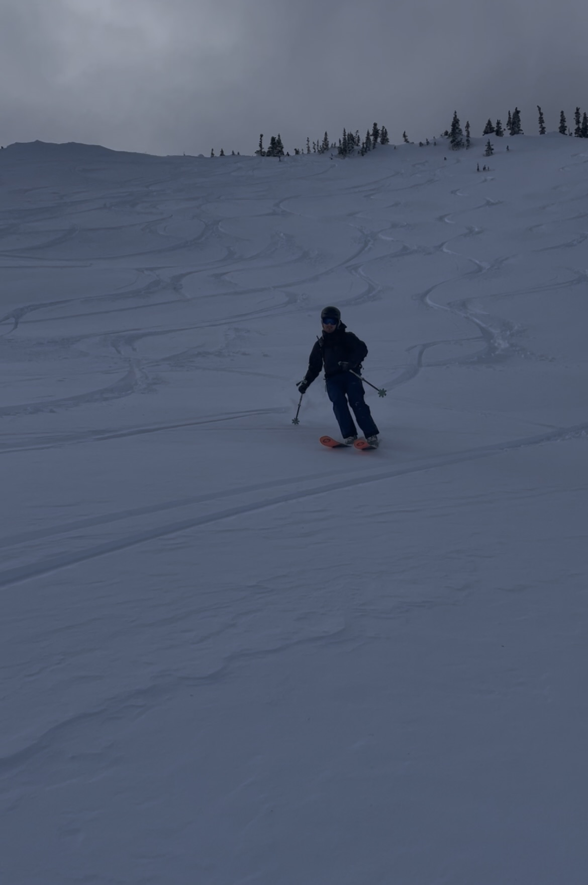
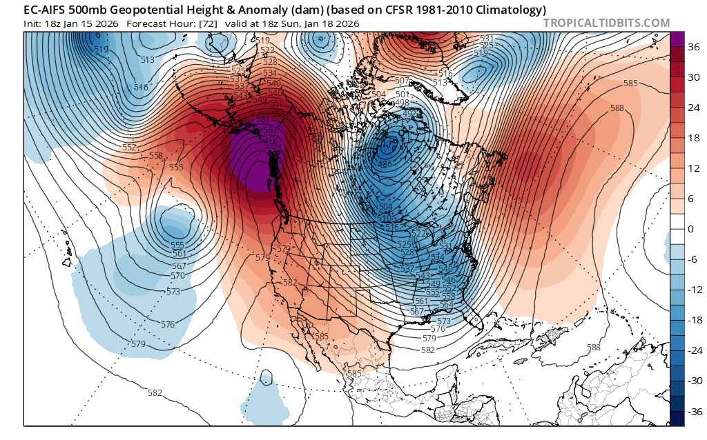
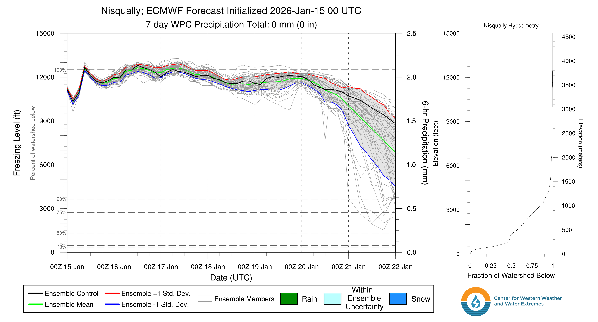
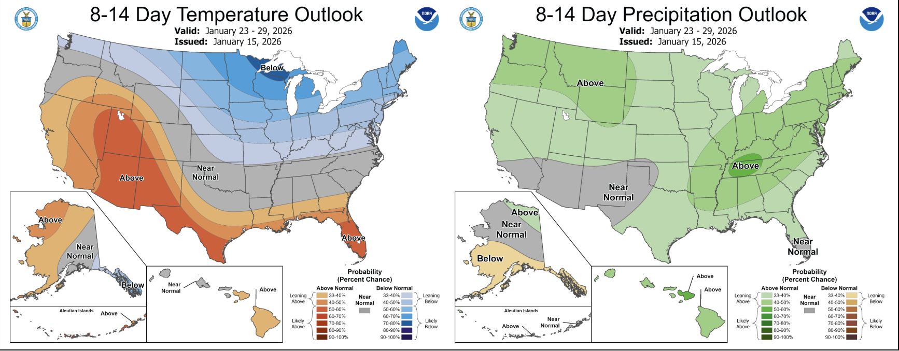

🌽 Jan-pril is here: Go get some corn while it's hot
Welcome to The Dendritic Growth Zone!
Past Week's Recap
As seems to be the case more often than not, we had yet another wild week of weather here in the PNW. Right after our last forecast this past Thursday (8 Jan), skiing riding conditions were near all-time. We finally had a decent base to support travel and heaps of blower pow to go with it. Sadly, we also saw the 1st and 2nd avalanche fatalities of the season in Washington. You can read the preliminary NWAC report here. Our hearts go out to all of those affected by this tragedy.
Through Saturday, the snowpack retained good skiing on wind-sheltered, shady aspects despite an incoming atmospheric river. However, this did not last... Sunday and Monday brought inches of rain all the way up to our highest peaks with snow levels above 8,000'. Since then, a dominant ridge of high pressure has quickly built, centered nearly right on top of Western Washington. With it, ridiculously high freezing levels, weak cold air pooling east of the Cascade Crest, and sunny skies at higher elevations have nuked much of our snowpack.

🧙♂️ Forecast Discussion
Short-term (Friday-Sunday)I won't have a whole lot to say with this rinse and repeat weather pattern over the next 5-7 days. A dominant ridge over the Gulf of Alaska will slowly move upstream (to the west) though it never quite moves far enough away for us to see any precipitation relief over the next week. The best news is that the corn harvest has likely come early this year. With all that rain, we were likely able to speed up the melt-freeze cycle typically needed to get a healthy corn harvest.

Medium-Term (Monday-Wednesday)
A whole lot of nothing changes in the medium-term forecast either. As seen in the ECMWF ensemble freezing levels below for the Nisqually River Basin (near Paradise), freezing levels hover around 12000' until Wednesday when they start dropping back to more seasonable levels. No precipitation expected during this Monday-Wednesday period.

🧙🔮🧙♂️ Reading the crystal ball - 7+ day outlook
The Climate Prediction Center has started to favor a cooler and wetter than average pattern over the Pacific Northwest to close out the month of January. Specifics of this are still quite uncertain, but our earliest chance of relief looks to be roughly next Friday 23 January. What a odd repeat of last winter with yet another "January Drought Layer" building in our snowpack once again. BUT! It is a long season and despite all the negativity I feel I am writing this post with, there certainly will be more powder days this season yet to come.

❄️ Snowfall
Weekend Snow Accumulation Forecast
| Site | Through 4am Saturday | Through 4am Sunday | Weekend Snow Accumulation (4pm Thursday through 4am Monday 19 Jan) |
|---|---|---|---|
| Mt. Baker (4500') | 0" | 0" | 0" |
| Washington Pass | 0" | 0" | 0" |
| Stevens Pass (4500') | 0" | 0" | 0" |
| Hurricane Ridge | 0" | 0" | 0" |
| Blewett Pass | 0" | 0" | 0" |
| Snoqualmie Pass | 0" | 0" | 0" |
| Crystal (5000') | 0" | 0" | 0" |
| Paradise | 0" | 0" | 0" |
| White Pass (5000') | 0" | 0" | 0" |
Easiest forecast of the season, cash it 💸
🧊 Freezing Level
- Friday: 11000 feet
- Saturday: 11000-12000 feet
- Sunday: 11000 feet
🎿 Our Recommendations
Best Choice This Weekend: South aspects before the afternoon on volcanoes 🌽
With the continued high pressure over the weekend, look for some decent corn potential on solar aspects roughly below 8000'. Above that, there wasn't any rain to speed up the corn process. Be careful at middle and lower elevations, particularly near the passes prone to East flow as I worry they won't soften all that much.
Runner-Up: Literally any other hobby 🧶
No, seriously. If you're not able to get some corn in the alpine, it will not be worth it. I promise. Open creeks, frozen coral reef at the passes, tree bombs, you name it. I have been saying lately that there are no bad conditions, only bad attitudes. But this weekend, there absolutely will be bad conditions. Time for your next knitting project! Or go enjoy the sun elsewhere!